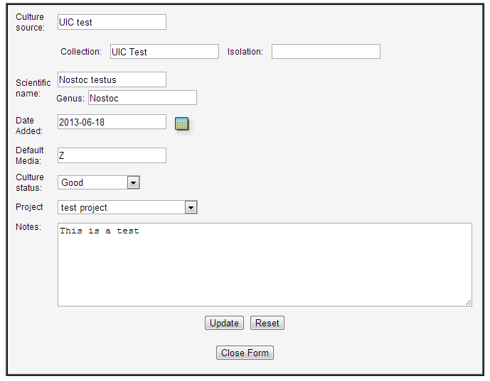
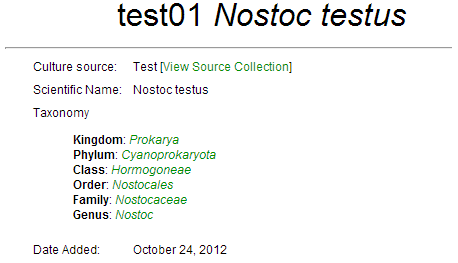

Select Add New from the Strain menu.

Enter information into the Add Strain form.
Click the Add Strain Button.
Basic strain and species information can be managed in the CYANOS database. Allowed attributes include strain ID, culture source, date added, date removed, removal reason, culture status, Latin binomial, default media, project code and notes.
Select Add New from the Strain menu.
Enter information into the Add Strain form.
Click the Add Strain Button.
The strain is now added to the database and can be viewed on the master strain list.
Return to table of contentsStrain information can be accessed from various strain links within the CYANOS website as well as the strain search form that is presented on the main page and accessible via the menu Strains > Search. An example of this list is seen in the following figure.

Clicking on a strain, whether from the search list or a strain link within CYANOS, will present the details of that strain. An example strain page is seen in the following figure.
The top part of the page displays the attributes of the strain. If the user has permission to modify the strain, the Edit Values button will be available and the user can click that button to display an editable form to change the strains attributes.
The lower part of the page has sections that list records associated to the strain. Each of these sections can be opened or closed by clicking on the green triangle to the left of the section title. For example, if a user clicked on Inoculations & Field Collections, the section would open to reveal a listing of inoculations or field collections associated with this strain.

Once the user is finished with a particular section it can be collapsed by clicking on the green triangle again.
Return to table of contentsTaxonomic information can be stored in the taxon and taxon_paths tables of the CYANOS database. This information can be tied to individual strains using the genus attribute of a strain record. The CYANOS web interface will automatically retrieve and present this information, if available.

Return to table of contentsA Taxa Browser is available via the Strain menu as well as the taxonomy links provided on the Strain Information page. The Taxa Browser also allows one to navigate strains based upon taxonomic data.
Return to table of contentsTaxonomic data in CYANOS is stored in two separate tables taxon and taxon_paths .
The table taxon stores the different taxonomic names possible. This table has two columns (name and level).
| name | level |
|---|---|
| Cyanoprokaryota | phylum |
| Hormogoneae | class |
| Nostocales | order |
| Nostoc | genus |
All taxonomic names MUST be globally unique. Additionally, it is not necessary to store species names in the taxon table. The genus name is typically used by CYANOS link to the associated taxonomic names. (see below)
The table taxon_paths utilizes three columns to store relationship information among the taxonomic names store in the taxon table. The three columns are parent, child, and depth.
The table taxon_paths is utilized by CYANOS to search the taxonomic records for all higher level names for any given taxonomic name. For each taxonomic name in the taxon table, there MUST be records to indicate the relationship of all parent nodes as well as the name to itself. For example the genus Nostoc should have "taxon_paths" records for its parent family, order, class, phylum, and kingdom.
| parent | child | level |
|---|---|---|
| Prokarya | Nostoc | 5 |
| Cyanoprokaryota | Nostoc | 4 |
| Hormogoneae | Nostoc | 3 |
| Nostocales | Nostoc | 2 |
| Nostocaceae | Nostoc | 1 |
| Nostoc | Nostoc | 0 |
This two table method of data storage does increase the work needed when inserting or deleting taxonomic records. However, it allows the flexibility to have arbitrary node depths at any point in the tree. For example, the standard naming scheme is kingdom, phylum, class, order, family, genus. One could construct an table with these 5 columns and use a single record to find all of the associated taxonomic names of a genus. However if one were to add a level of "subclass" the table would need to be altered to accommodate the new column "subclass". This could be a potential issue given that some classes would have a subclass where as other classes may not have any subclasses. From the standpoint of the database table, there is no issue with having a column with empty data. However, when constructing a tree, in order to navigate the taxonomic namespace, empty data results in nodes that lack an ID and thus errors in constructing a tree. Given that updates to the table would only occur with changes in the taxonomic naming scheme (infrequently), it was decided that this small "expense" in more complex updating what worth the improved ability to construct taxonomic trees.
Furthermore, searching arbitrary levels of the taxonomic tree is simpler given that the taxonomic level, e.g. genus, family, or kingdom, is stored as a separate attribute and not tied to the column name. From an informatics standpoint, all taxonomic names are now "equal" and one could utilize higher order taxonomic names as the "genus" of a strain, if a more specific name has not been determined. For example, if one knew that a strain was a member of the order Actinomycetales, however the genus had not yet been determined. In that case, CYANOS would still be able to find the taxonomic name and its "parents" and would display taxonomic information on the information page. Consider the following strain record where the "genus" for the strain was set to the order "Oscillatoriales".
Return to table of contentsNOTE: CYANOS searches for the appropriate taxonomic names "on demand". Thus, changes to these tables should only be required when there is a revision in the taxonomic hierarchy while changes in strain identification only need to happen to the strain record and the resulting taxonomy will link based upon the genus.
Given the "complex" nature of the two table system described in the previous section. Directly updating the tables via an SQL interface is strongly discouraged. This can result in inconsistencies of the taxonomic data and searching and display of taxonomic data may be impaired. The preferred method of updating taxonomic data is to generate a spreadsheet of taxonomic data and upload to CYANOS using the upload interface. The spreadsheet should have three columns: one for the names to be added, one for the associated level (e.g. kingdom, genus, etc.), and one for the direct parent of the name to be added. Each name to be added should only have one row.
Additionally, CYANOS is able to export all current taxonomic records in this format. Access the Taxa Browser via the Strain menu, then click on the link Export taxonomic records. The result will be a comma separated values (CSV) file with all taxonomic names and associated information required to upload the data into CYANOS, if required.
Return to table of contentsRequired permissions listed in this table denote the role and permission bit, in parenthesis. Actions in italics utilize global level permissions only.
| Action | Required Permission |
| Add a new strain | culture(Create) |
| Modify a strain | culture(Write) |
| Delete a strain | culture(Delete) |